<!DOCTYPE html>
<html lang="zh-en">
    
<head>
    <meta charset="UTF-8">
    <meta name="viewport" content="width=device-width, initial-scale=1">
    <meta name="generator" content="Wang kuntian&#39;s Blog">
    <title>Trove的操作 - Wang kuntian&#39;s Blog</title>
    <meta name="author" content="Wang kuntian">
    
        <meta name="keywords" content="Trove">
    
    
        <link rel="icon" href="https://wangkuntian.github.io/assets/images/favicon.png">
    
    
        
            <link rel="alternate" type="application/atom+xml" title="RSS" href="/atom.xml">
        
    
    <script type="application/ld+json">{"@context":"http://schema.org","@type":"BlogPosting","author":{"@type":"Person","name":"Wang kuntian","sameAs":["https://github.com/wangkuntian","mailto:wangkuntian1994@163.com"],"image":"faker.jpg"},"articleBody":"\n\n\n基本操作展示实例列表Trove中最常用的命令就是获取实例列表并打印它们的状态。列出实例的最简单的命令是trove list。\n1trove list\n\n\n查看json格式时，可以使用–json命令行选项。\n\n\n当实例数量过多时，可以使用–limit命令行选项。\n1trove list --limit &lt;数字&gt;\n启动实例启动实例的最基本方法是使用trove create命令并传入以下参数。\n\n实例名称（name）\n实例的类型id（flavor_id）\n持久化卷的大小（size）\n数据库类型（datastore）\n数据库版本（datastore_version）\n\n1trove create &lt;name&gt; &lt;flavor_id&gt; --size &lt;数字(G)&gt; --datastore &lt;datastore_id或datastore_name&gt; --datastore_version &lt;datastore_version_id 或datastore_version_name&gt;\n\n\n重启实例实例一旦被创建，就可以用trove restart命令重启实例。这个命令只会重启运行在由Trove管理的Nova实例中的数据库服务，不会重启Nova实例。\n1trove restart &lt;实例id&gt;\n\n删除实例可以使用trove delete命令永久删除一个实例。delete命令是不可逆的，一旦删除了实例，将永远无法访问其上的数据库服务，实例中的所有数据也将消失。\n1trove delete &lt;实例id&gt;\n\n创建用户和数据库启用数据库的root用户像Mysql之类的数据库服务都有一个超级用户（root），在默认情况下，Trove的数据库实例是禁止这个用户的。可以利用root用户连接到Mysql数据库服务。\n1mysql -uroot -p&lt;password&gt; -h&lt;ip&gt; -s\n\n\n在一个运行中的实例上启用root用户\n1trove root-enable &lt;实例id&gt;\n\n\n 可以使用root-show 查看root用户的状态。\n 1trove root-show &lt;实例id&gt;\n \n\n启用默认root用户除了在已经存在的数据库实例上启用root用户，也可以在默认情况下启用root用户（在实例创建时）。需要将trove.conf配置文件的[mysql]配置中的root_on_create设为true。\n12[mysql]root_on_create = True\n\n 需要重启Trove服务生效。\n\n\n\n\n数据库操作\n列出数据库\n1trove database-list &lt;实例id&gt;\n\n\n禁止某些数据库的显示经常会有一些内置的数据库不需要通过database-list命令显示出来。可以通过设置trove.conf中的ignore_dbs参数禁止这些数据库的显示。\nignore_dbs的默认值是lost+found、mysql和information_schema。\n\n\n在运行的实例上创建数据库\n1trove database-create &lt;实例id&gt; &lt;name&gt;\n\n创建实例时创建数据库trove create命令允许在创建实例的同时创建多个数据库。可以指定任意数量的数据库并与用户关联。\n1trove create &lt;name&gt; &lt;flavor_id&gt; --size &lt;size&gt; --datastore &lt;datastore&gt; --databases &lt;database1 database2 ...&gt; --users &lt;user1:password1 user2:password2 ...&gt;\n\n\n\n用户操作\n在创建实例时创建用户\n1trove create &lt;name&gt; &lt;flavor_id&gt; --size &lt;size&gt; --datastore &lt;datastore&gt; --databases &lt;database1 database2 ...&gt; --users &lt;user1:password1 user2:password2 ...&gt;\n\n列出用户\n1trove user-list &lt;实例id&gt;\n\n\n在运行的实例上创建用户\n1trove user-create &lt;实例id&gt; &lt;username&gt; --databases &lt;database _name&gt;\n\n删除用户删除实例的所有用户\n1trove user-delete &lt;实例id&gt;\n 删除实例的指定用户\n 1trove user-delete &lt;实例id&gt; &lt;username&gt;\n\n管理用户的访问权限\n\n列出用户的访问权限user-show-access 命令显示了允许用户访问的数据库。\n1trove user-show-access &lt;实例id&gt; &lt;username&gt;\n\n\n在user-list中禁止某些用户一些数据库中有些内置用户不能向用户展示，可以在trove.conf配置文件中使用ignore_users参数禁止用户在user-list命令中显示\n123[DEFAULT]ignore_users = os_admin,root...\nMysql使用[DEFAULT]配置段\n\n\n给予用户访问权限\n1trove user-grant-access &lt;实例id&gt; &lt;username&gt;\n\n撤销用户访问权限\n1trove user-revoke-access &lt;实例id&gt; &lt;username&gt;\n\n\n\n\n\n其他查看实例详细信息1trove show &lt;实例id或name&gt;\n\n\n查看flavor1trove flavor-list\n\n\n查看flavor详细1trove flavor-show &lt;实例id&gt;\n\n\n查看datastore1trove datastore-list\n\n查看datastore详细1trove datastore-show &lt;datastore_id&gt;\n\n\n查看datastore版本1trove datastore-version-list &lt;datastore_id&gt;\n\n\n帮助1trove help &lt;命令&gt;\n\n\n高级操作自定义flavor在启动一个Trove实例时，必须要指定一个flavor。flavor是虚拟机的模板，提供了基本的硬件配置信息，例如内存、磁盘空间、虚拟CPU的数量等等。\n查看可用flavor1trove flavor-list\n\n\n\b查看nova的flavor1nova flavor-list\n\n创建flavor1nova flavor-create &lt;name&gt; &lt;id&gt; &lt;ram&gt; &lt;disk&gt; &lt;vcpus&gt;\n\n备份\n\n新建备份1trove backup-create &lt;实例id&gt; &lt;name&gt;\n\n\n新建增量备份Trove还支持基于现有备份创建增量备份。\n1trove backup-create &lt;实例id&gt; &lt;name&gt; --parent &lt;已有备份id&gt; --description &quot;&lt;description&gt;&quot;\n\n恢复备份恢复备份的操作通过启动基于备份的新实例来完成。在Trove中，不能加载备份到现有实例中。\n1trove create &lt;name&gt; &lt;flavor_id&gt; --size &lt;num&gt; --backup &lt;backup_id&gt;\n\n删除备份1trove backup-delete &lt;备份的id/name&gt;\n\n查看备份1trove backup-list\n\n\n找到指定实例的所有备份1trove backup-list-instance &lt;实例id&gt;\n\n主从创建从节点查看主节点信息。\n1trove show &lt;实例id&gt;\n创建副本。\n1trove create \b&lt;name&gt; &lt;flavor_id&gt; --size &lt;num&gt; --replica_of &lt;实例id&gt; --replica_count &lt;count&gt;\n\n\nreplica_count允许同时创建多个副本。默认值是1。\n\n故障切换在复制环境中，有一个主节点和一个或多个副本。可能用户会从目前可用的副本中选出新的主节点。这个过程称为故障切换。\n有序故障切换使用promote-to-replica-source命令替换当前的主节点。\n1trove promote-to-replica-source &lt;副本实例id/name&gt;\n打破主节点和副本之间的复制的另一种方法是将副本从主节点上分离出来，这是一种不可逆的操作，通常用于在一个时间点生成一个数据集的备份，并可以随后用于生成该时间点的新实例。\n1trove detach-replica &lt;副本实例id/name&gt;\n\n主节点失败的故障切换使用eject-replica-source命令来处理主节点失败的情况。当对一个失败的主节点执行该命令时，会将该主节点抛弃并选举出新的主节点。该命令有些保护措施。当针对一个不是主节点的实例执行时，该命令会出错。此外针对一个运行正常的主节点执行时，命令也会失败。\n1trove eject-replica-source &lt;失败主节点实例id/name&gt;","dateCreated":"2018-09-04T11:26:07+08:00","dateModified":"2020-12-28T11:08:11+08:00","datePublished":"2018-09-04T11:26:07+08:00","description":"Trove的操作","headline":"Trove的操作","image":["covers/LOL/Ezreal/Arcade-Ezreal.jpg","covers/LOL/Ezreal/Arcade-Ezreal.jpg"],"mainEntityOfPage":{"@type":"WebPage","@id":"https://wangkuntian.github.io/2018/09/04/Trove%E7%9A%84%E6%93%8D%E4%BD%9C/"},"publisher":{"@type":"Organization","name":"Wang kuntian","sameAs":["https://github.com/wangkuntian","mailto:wangkuntian1994@163.com"],"image":"faker.jpg","logo":{"@type":"ImageObject","url":"faker.jpg"}},"url":"https://wangkuntian.github.io/2018/09/04/Trove%E7%9A%84%E6%93%8D%E4%BD%9C/","keywords":"Trove","thumbnailUrl":"covers/LOL/Ezreal/Arcade-Ezreal.jpg"}</script>
    <meta name="description" content="Trove的操作">
<meta property="og:type" content="blog">
<meta property="og:title" content="Trove的操作">
<meta property="og:url" content="https://wangkuntian.github.io/2018/09/04/Trove%E7%9A%84%E6%93%8D%E4%BD%9C/index.html">
<meta property="og:site_name" content="Wang kuntian&#39;s Blog">
<meta property="og:description" content="Trove的操作">
<meta property="og:locale" content="zh_EN">
<meta property="og:image" content="https://wangkuntian.github.io/2018/09/04/Trove%E7%9A%84%E6%93%8D%E4%BD%9C/images/trove-list.png">
<meta property="og:image" content="https://wangkuntian.github.io/2018/09/04/Trove%E7%9A%84%E6%93%8D%E4%BD%9C/images/trove-create.png">
<meta property="og:image" content="https://wangkuntian.github.io/2018/09/04/Trove%E7%9A%84%E6%93%8D%E4%BD%9C/images/trove-root-enable.png">
<meta property="og:image" content="https://wangkuntian.github.io/2018/09/04/Trove%E7%9A%84%E6%93%8D%E4%BD%9C/images/trove-root-show.png">
<meta property="og:image" content="https://wangkuntian.github.io/2018/09/04/Trove%E7%9A%84%E6%93%8D%E4%BD%9C/images/trove-database-list.png">
<meta property="og:image" content="https://wangkuntian.github.io/2018/09/04/Trove%E7%9A%84%E6%93%8D%E4%BD%9C/images/trove-user-list.png">
<meta property="og:image" content="https://wangkuntian.github.io/2018/09/04/Trove%E7%9A%84%E6%93%8D%E4%BD%9C/images/trove-show-user-access.png">
<meta property="og:image" content="https://wangkuntian.github.io/2018/09/04/Trove%E7%9A%84%E6%93%8D%E4%BD%9C/images/trove-show.png">
<meta property="og:image" content="https://wangkuntian.github.io/2018/09/04/Trove%E7%9A%84%E6%93%8D%E4%BD%9C/images/trove-flavor-list.png">
<meta property="og:image" content="https://wangkuntian.github.io/2018/09/04/Trove%E7%9A%84%E6%93%8D%E4%BD%9C/images/trove-flavor-show.png">
<meta property="og:image" content="https://wangkuntian.github.io/2018/09/04/Trove%E7%9A%84%E6%93%8D%E4%BD%9C/images/trove-datastore-list.png">
<meta property="og:image" content="https://wangkuntian.github.io/2018/09/04/Trove%E7%9A%84%E6%93%8D%E4%BD%9C/images/trove-datastore-show.png">
<meta property="og:image" content="https://wangkuntian.github.io/2018/09/04/Trove%E7%9A%84%E6%93%8D%E4%BD%9C/images/trove-datastore-version-list.png">
<meta property="og:image" content="https://wangkuntian.github.io/2018/09/04/Trove%E7%9A%84%E6%93%8D%E4%BD%9C/images/trove-help.png">
<meta property="og:image" content="https://wangkuntian.github.io/2018/09/04/Trove%E7%9A%84%E6%93%8D%E4%BD%9C/images/trove-flavor-list.png">
<meta property="og:image" content="https://wangkuntian.github.io/2018/09/04/Trove%E7%9A%84%E6%93%8D%E4%BD%9C/images/nova-flavor-list.png">
<meta property="og:image" content="https://wangkuntian.github.io/2018/09/04/Trove%E7%9A%84%E6%93%8D%E4%BD%9C/images/trove-backup-create.png">
<meta property="og:image" content="https://wangkuntian.github.io/2018/09/04/Trove%E7%9A%84%E6%93%8D%E4%BD%9C/images/trove-backup-list.png">
<meta property="og:image" content="https://wangkuntian.github.io/2018/09/04/Trove%E7%9A%84%E6%93%8D%E4%BD%9C/images/trove-create-replica.png">
<meta property="article:published_time" content="2018-09-04T03:26:07.000Z">
<meta property="article:modified_time" content="2020-12-28T03:08:11.000Z">
<meta property="article:author" content="Wang kuntian">
<meta property="article:tag" content="Trove">
<meta name="twitter:card" content="summary">
<meta name="twitter:image" content="https://wangkuntian.github.io/2018/09/04/Trove%E7%9A%84%E6%93%8D%E4%BD%9C/images/trove-list.png">
    
    
        
    
    
        <meta property="og:image" content="https://wangkuntian.github.io/assets/images/faker.jpg"/>
    
    
        <meta property="og:image" content="https://wangkuntian.github.io/2018/09/04/Trove%E7%9A%84%E6%93%8D%E4%BD%9C/covers/LOL/Ezreal/Arcade-Ezreal.jpg"/>
        <meta class="swiftype" name="image" data-type="enum" content="https://wangkuntian.github.io/2018/09/04/Trove%E7%9A%84%E6%93%8D%E4%BD%9C/covers/LOL/Ezreal/Arcade-Ezreal.jpg"/>
    
    
        <meta property="og:image" content="https://wangkuntian.github.io/2018/09/04/Trove%E7%9A%84%E6%93%8D%E4%BD%9C/covers/LOL/Ezreal/Arcade-Ezreal.jpg"/>
        <meta class="swiftype" name="image" data-type="enum" content="https://wangkuntian.github.io/2018/09/04/Trove%E7%9A%84%E6%93%8D%E4%BD%9C/covers/LOL/Ezreal/Arcade-Ezreal.jpg"/>
    
    
    <!--STYLES-->
    
<link rel="stylesheet" href="/assets/css/style-wrpl6js1os3bgfkghjae9uyzylsynx8pb7w9npnfwjkzrhjgzqzb9vxk4spv.min.css">

    <!--STYLES END-->
    
    <script async src="https://www.googletagmanager.com/gtag/js?id=UA-136102260-1"></script>
    <script>
        window.dataLayer = window.dataLayer || [];
        function gtag(){dataLayer.push(arguments);}
        gtag('js', new Date());

        gtag('config', 'UA-136102260-1');
    </script>


    

    
        
    
<!-- hexo injector head_end start -->
<link rel="stylesheet" href="https://cdn.jsdelivr.net/npm/katex@0.12.0/dist/katex.min.css">

<link rel="stylesheet" href="https://cdn.jsdelivr.net/npm/hexo-math@4.0.0/dist/style.css">
<!-- hexo injector head_end end --></head>

    <body>
        <div id="blog">
            <!-- Define author's picture -->


    
        
            
        
    

<header id="header" data-behavior="4">
    <i id="btn-open-sidebar" class="fa fa-lg fa-bars"></i>
    <div class="header-title">
        <a
            class="header-title-link"
            href="/"
            aria-label=""
        >
            Wang kuntian&#39;s Blog
        </a>
    </div>
    
        
            <a
                class="header-right-picture "
                href="#about"
                aria-label="Abre el enlace: /#about"
            >
        
        
            
        
        </a>
    
</header>

            <!-- Define author's picture -->


        
    

<nav id="sidebar" data-behavior="4">
    <div class="sidebar-container">
        
            <div class="sidebar-profile">
                <a
                    href="/#about"
                    aria-label="Leer más sobre el autor."
                >
                    
                </a>
                <h4 class="sidebar-profile-name">Wang kuntian</h4>
                
                    <h5 class="sidebar-profile-bio"><p>Love Python Love LOL</p>
</h5>
                
            </div>
        
        
            <ul class="sidebar-buttons">
            
                <li class="sidebar-button">
                    
                        <a
                            class="sidebar-button-link "
                            href="/"
                            
                            rel="noopener"
                            title="Home"
                        >
                        <i class="sidebar-button-icon fa fa-home" aria-hidden="true"></i>
                        <span class="sidebar-button-desc">Home</span>
                    </a>
            </li>
            
                <li class="sidebar-button">
                    
                        <a
                            class="sidebar-button-link "
                            href="/all-categories"
                            
                            rel="noopener"
                            title="Categories"
                        >
                        <i class="sidebar-button-icon fa fa-bookmark" aria-hidden="true"></i>
                        <span class="sidebar-button-desc">Categories</span>
                    </a>
            </li>
            
                <li class="sidebar-button">
                    
                        <a
                            class="sidebar-button-link "
                            href="/all-tags"
                            
                            rel="noopener"
                            title="Tags"
                        >
                        <i class="sidebar-button-icon fa fa-tags" aria-hidden="true"></i>
                        <span class="sidebar-button-desc">Tags</span>
                    </a>
            </li>
            
                <li class="sidebar-button">
                    
                        <a
                            class="sidebar-button-link "
                            href="/all-archives"
                            
                            rel="noopener"
                            title="Archives"
                        >
                        <i class="sidebar-button-icon fa fa-archive" aria-hidden="true"></i>
                        <span class="sidebar-button-desc">Archives</span>
                    </a>
            </li>
            
                <li class="sidebar-button">
                    
                        <a
                            class="sidebar-button-link open-algolia-search"
                            href="#search"
                            
                            rel="noopener"
                            title="Search"
                        >
                        <i class="sidebar-button-icon fa fa-search" aria-hidden="true"></i>
                        <span class="sidebar-button-desc">Search</span>
                    </a>
            </li>
            
                <li class="sidebar-button">
                    
                        <a
                            class="sidebar-button-link "
                            href="#about"
                            
                            rel="noopener"
                            title="About"
                        >
                        <i class="sidebar-button-icon fa fa-question" aria-hidden="true"></i>
                        <span class="sidebar-button-desc">About</span>
                    </a>
            </li>
            
        </ul>
        
            <ul class="sidebar-buttons">
            
                <li class="sidebar-button">
                    
                        <a
                            class="sidebar-button-link "
                            href="https://github.com/wangkuntian"
                            
                                target="_blank"
                            
                            rel="noopener"
                            title="GitHub"
                        >
                        <i class="sidebar-button-icon fab fa-github" aria-hidden="true"></i>
                        <span class="sidebar-button-desc">GitHub</span>
                    </a>
            </li>
            
                <li class="sidebar-button">
                    
                        <a
                            class="sidebar-button-link "
                            href="mailto:wangkuntian1994@163.com"
                            
                                target="_blank"
                            
                            rel="noopener"
                            title="Mail"
                        >
                        <i class="sidebar-button-icon fa fa-envelope" aria-hidden="true"></i>
                        <span class="sidebar-button-desc">Mail</span>
                    </a>
            </li>
            
        </ul>
        
            <ul class="sidebar-buttons">
            
                <li class="sidebar-button">
                    
                        <a
                            class="sidebar-button-link "
                            href="/atom.xml"
                            
                            rel="noopener"
                            title="RSS"
                        >
                        <i class="sidebar-button-icon fa fa-rss" aria-hidden="true"></i>
                        <span class="sidebar-button-desc">RSS</span>
                    </a>
            </li>
            
        </ul>
        
    </div>
</nav>

            
        <div class="post-header-cover
                    text-center
                    post-header-cover--full"
             style="background-image:url('/covers/LOL/Ezreal/Arcade-Ezreal.jpg');"
             data-behavior="4">
            
                <div class="post-header main-content-wrap text-center">
    
        <h1 class="post-title">
            Trove的操作
        </h1>
    
    
        <div class="post-meta">
    <time datetime="2018-09-04T11:26:07+08:00">
	
		    Sep 04, 2018
    	
    </time>
    
</div>

    
</div>

            
        </div>

            <div id="main" data-behavior="4"
                 class="hasCover
                        hasCoverMetaIn
                        hasCoverCaption">
                
<article class="post">
    
        <span class="post-header-cover-caption caption">Arcade Ezreal</span>
    
    
    <div class="post-content markdown">
        <div class="main-content-wrap">
            <!-- excerpt -->
<h1 id="table-of-contents">目录</h1><ol class="toc"><li class="toc-item toc-level-1"><a class="toc-link" href="#%E5%9F%BA%E6%9C%AC%E6%93%8D%E4%BD%9C"><span class="toc-text">基本操作</span></a><ol class="toc-child"><li class="toc-item toc-level-2"><a class="toc-link" href="#%E5%B1%95%E7%A4%BA%E5%AE%9E%E4%BE%8B%E5%88%97%E8%A1%A8"><span class="toc-text">展示实例列表</span></a></li><li class="toc-item toc-level-2"><a class="toc-link" href="#%E5%90%AF%E5%8A%A8%E5%AE%9E%E4%BE%8B"><span class="toc-text">启动实例</span></a></li><li class="toc-item toc-level-2"><a class="toc-link" href="#%E9%87%8D%E5%90%AF%E5%AE%9E%E4%BE%8B"><span class="toc-text">重启实例</span></a></li><li class="toc-item toc-level-2"><a class="toc-link" href="#%E5%88%A0%E9%99%A4%E5%AE%9E%E4%BE%8B"><span class="toc-text">删除实例</span></a></li><li class="toc-item toc-level-2"><a class="toc-link" href="#%E5%88%9B%E5%BB%BA%E7%94%A8%E6%88%B7%E5%92%8C%E6%95%B0%E6%8D%AE%E5%BA%93"><span class="toc-text">创建用户和数据库</span></a><ol class="toc-child"><li class="toc-item toc-level-3"><a class="toc-link" href="#%E5%90%AF%E7%94%A8%E6%95%B0%E6%8D%AE%E5%BA%93%E7%9A%84root%E7%94%A8%E6%88%B7"><span class="toc-text">启用数据库的root用户</span></a></li><li class="toc-item toc-level-3"><a class="toc-link" href="#%E6%95%B0%E6%8D%AE%E5%BA%93%E6%93%8D%E4%BD%9C"><span class="toc-text">数据库操作</span></a></li><li class="toc-item toc-level-3"><a class="toc-link" href="#%E7%94%A8%E6%88%B7%E6%93%8D%E4%BD%9C"><span class="toc-text">用户操作</span></a></li></ol></li><li class="toc-item toc-level-2"><a class="toc-link" href="#%E5%85%B6%E4%BB%96"><span class="toc-text">其他</span></a><ol class="toc-child"><li class="toc-item toc-level-3"><a class="toc-link" href="#%E6%9F%A5%E7%9C%8B%E5%AE%9E%E4%BE%8B%E8%AF%A6%E7%BB%86%E4%BF%A1%E6%81%AF"><span class="toc-text">查看实例详细信息</span></a></li><li class="toc-item toc-level-3"><a class="toc-link" href="#%E6%9F%A5%E7%9C%8Bflavor"><span class="toc-text">查看flavor</span></a></li><li class="toc-item toc-level-3"><a class="toc-link" href="#%E6%9F%A5%E7%9C%8Bflavor%E8%AF%A6%E7%BB%86"><span class="toc-text">查看flavor详细</span></a></li><li class="toc-item toc-level-3"><a class="toc-link" href="#%E6%9F%A5%E7%9C%8Bdatastore"><span class="toc-text">查看datastore</span></a></li><li class="toc-item toc-level-3"><a class="toc-link" href="#%E6%9F%A5%E7%9C%8Bdatastore%E8%AF%A6%E7%BB%86"><span class="toc-text">查看datastore详细</span></a></li><li class="toc-item toc-level-3"><a class="toc-link" href="#%E6%9F%A5%E7%9C%8Bdatastore%E7%89%88%E6%9C%AC"><span class="toc-text">查看datastore版本</span></a></li><li class="toc-item toc-level-3"><a class="toc-link" href="#%E5%B8%AE%E5%8A%A9"><span class="toc-text">帮助</span></a></li></ol></li></ol></li><li class="toc-item toc-level-1"><a class="toc-link" href="#%E9%AB%98%E7%BA%A7%E6%93%8D%E4%BD%9C"><span class="toc-text">高级操作</span></a><ol class="toc-child"><li class="toc-item toc-level-2"><a class="toc-link" href="#%E8%87%AA%E5%AE%9A%E4%B9%89flavor"><span class="toc-text">自定义flavor</span></a><ol class="toc-child"><li class="toc-item toc-level-3"><a class="toc-link" href="#%E6%9F%A5%E7%9C%8B%E5%8F%AF%E7%94%A8flavor"><span class="toc-text">查看可用flavor</span></a></li><li class="toc-item toc-level-3"><a class="toc-link" href="#%E6%9F%A5%E7%9C%8Bnova%E7%9A%84flavor"><span class="toc-text">查看nova的flavor</span></a></li><li class="toc-item toc-level-3"><a class="toc-link" href="#%E5%88%9B%E5%BB%BAflavor"><span class="toc-text">创建flavor</span></a></li></ol></li><li class="toc-item toc-level-2"><a class="toc-link" href="#%E5%A4%87%E4%BB%BD"><span class="toc-text">备份</span></a><ol class="toc-child"><li class="toc-item toc-level-3"><a class="toc-link" href="#%E6%96%B0%E5%BB%BA%E5%A4%87%E4%BB%BD"><span class="toc-text">新建备份</span></a></li><li class="toc-item toc-level-3"><a class="toc-link" href="#%E6%96%B0%E5%BB%BA%E5%A2%9E%E9%87%8F%E5%A4%87%E4%BB%BD"><span class="toc-text">新建增量备份</span></a></li><li class="toc-item toc-level-3"><a class="toc-link" href="#%E6%81%A2%E5%A4%8D%E5%A4%87%E4%BB%BD"><span class="toc-text">恢复备份</span></a></li><li class="toc-item toc-level-3"><a class="toc-link" href="#%E5%88%A0%E9%99%A4%E5%A4%87%E4%BB%BD"><span class="toc-text">删除备份</span></a></li><li class="toc-item toc-level-3"><a class="toc-link" href="#%E6%9F%A5%E7%9C%8B%E5%A4%87%E4%BB%BD"><span class="toc-text">查看备份</span></a></li><li class="toc-item toc-level-3"><a class="toc-link" href="#%E6%89%BE%E5%88%B0%E6%8C%87%E5%AE%9A%E5%AE%9E%E4%BE%8B%E7%9A%84%E6%89%80%E6%9C%89%E5%A4%87%E4%BB%BD"><span class="toc-text">找到指定实例的所有备份</span></a></li></ol></li><li class="toc-item toc-level-2"><a class="toc-link" href="#%E4%B8%BB%E4%BB%8E"><span class="toc-text">主从</span></a><ol class="toc-child"><li class="toc-item toc-level-3"><a class="toc-link" href="#%E5%88%9B%E5%BB%BA%E4%BB%8E%E8%8A%82%E7%82%B9"><span class="toc-text">创建从节点</span></a></li><li class="toc-item toc-level-3"><a class="toc-link" href="#%E6%95%85%E9%9A%9C%E5%88%87%E6%8D%A2"><span class="toc-text">故障切换</span></a><ol class="toc-child"><li class="toc-item toc-level-4"><a class="toc-link" href="#%E6%9C%89%E5%BA%8F%E6%95%85%E9%9A%9C%E5%88%87%E6%8D%A2"><span class="toc-text">有序故障切换</span></a></li><li class="toc-item toc-level-4"><a class="toc-link" href="#%E4%B8%BB%E8%8A%82%E7%82%B9%E5%A4%B1%E8%B4%A5%E7%9A%84%E6%95%85%E9%9A%9C%E5%88%87%E6%8D%A2"><span class="toc-text">主节点失败的故障切换</span></a></li></ol></li></ol></li></ol></li></ol>

<h1 id="基本操作"><a href="#基本操作" class="headerlink" title="基本操作"></a>基本操作</h1><h2 id="展示实例列表"><a href="#展示实例列表" class="headerlink" title="展示实例列表"></a>展示实例列表</h2><p>Trove中最常用的命令就是获取实例列表并打印它们的状态。列出实例的最简单的命令是trove list。</p>
<figure class="highlight bash"><table><tr><td class="gutter"><pre><span class="line">1</span><br></pre></td><td class="code"><pre><span class="line">trove list</span><br></pre></td></tr></table></figure>
<div class="figure " style="width:;"><a class="fancybox" href="images/trove-list.png" title="" data-caption="" data-fancybox="default">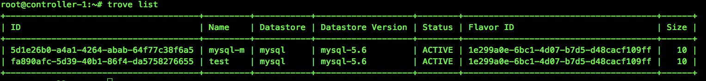</a></div>

<div class="alert info"><p>查看json格式时，可以使用–json命令行选项。</p>
</div>

<p>当实例数量过多时，可以使用–limit命令行选项。</p>
<figure class="highlight bash"><table><tr><td class="gutter"><pre><span class="line">1</span><br></pre></td><td class="code"><pre><span class="line">trove list --<span class="built_in">limit</span> &lt;数字&gt;</span><br></pre></td></tr></table></figure>
<h2 id="启动实例"><a href="#启动实例" class="headerlink" title="启动实例"></a>启动实例</h2><p>启动实例的最基本方法是使用trove create命令并传入以下参数。</p>
<ul>
<li>实例名称（name）</li>
<li>实例的类型id（flavor_id）</li>
<li>持久化卷的大小（size）</li>
<li>数据库类型（datastore）</li>
<li>数据库版本（datastore_version）</li>
</ul>
<figure class="highlight bash"><table><tr><td class="gutter"><pre><span class="line">1</span><br></pre></td><td class="code"><pre><span class="line">trove create &lt;name&gt; &lt;flavor_id&gt; --size &lt;数字(G)&gt; --datastore &lt;datastore_id或datastore_name&gt; --datastore_version &lt;datastore_version_id 或datastore_version_name&gt;</span><br></pre></td></tr></table></figure>
<div class="figure " style="width:;"><a class="fancybox" href="images/trove-create.png" title="" data-caption="" data-fancybox="default">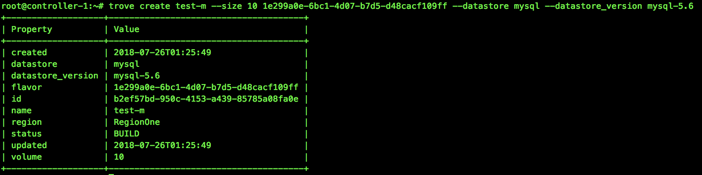</a></div>

<h2 id="重启实例"><a href="#重启实例" class="headerlink" title="重启实例"></a>重启实例</h2><p>实例一旦被创建，就可以用trove restart命令重启实例。这个命令只会重启运行在由Trove管理的Nova实例中的数据库服务，不会重启Nova实例。</p>
<figure class="highlight bash"><table><tr><td class="gutter"><pre><span class="line">1</span><br></pre></td><td class="code"><pre><span class="line">trove restart &lt;实例id&gt;</span><br></pre></td></tr></table></figure>

<h2 id="删除实例"><a href="#删除实例" class="headerlink" title="删除实例"></a>删除实例</h2><p>可以使用trove delete命令永久删除一个实例。delete命令是不可逆的，一旦删除了实例，将永远无法访问其上的数据库服务，实例中的所有数据也将消失。</p>
<figure class="highlight bash"><table><tr><td class="gutter"><pre><span class="line">1</span><br></pre></td><td class="code"><pre><span class="line">trove delete &lt;实例id&gt;</span><br></pre></td></tr></table></figure>

<h2 id="创建用户和数据库"><a href="#创建用户和数据库" class="headerlink" title="创建用户和数据库"></a>创建用户和数据库</h2><h3 id="启用数据库的root用户"><a href="#启用数据库的root用户" class="headerlink" title="启用数据库的root用户"></a>启用数据库的root用户</h3><p>像Mysql之类的数据库服务都有一个超级用户（root），在默认情况下，Trove的数据库实例是禁止这个用户的。可以利用root用户连接到Mysql数据库服务。</p>
<figure class="highlight bash"><table><tr><td class="gutter"><pre><span class="line">1</span><br></pre></td><td class="code"><pre><span class="line">mysql -uroot -p&lt;password&gt; -h&lt;ip&gt; -s</span><br></pre></td></tr></table></figure>

<ol>
<li><p><strong>在一个运行中的实例上启用root用户</strong></p>
<figure class="highlight bash"><table><tr><td class="gutter"><pre><span class="line">1</span><br></pre></td><td class="code"><pre><span class="line">trove root-enable &lt;实例id&gt;</span><br></pre></td></tr></table></figure>
<div class="figure " style="width:;"><a class="fancybox" href="images/trove-root-enable.png" title="" data-caption="" data-fancybox="default">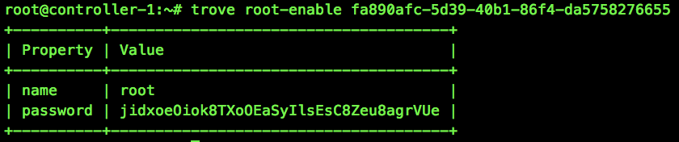</a></div>

<p> 可以使用root-show 查看root用户的状态。</p>
 <figure class="highlight bash"><table><tr><td class="gutter"><pre><span class="line">1</span><br></pre></td><td class="code"><pre><span class="line">trove root-show &lt;实例id&gt;</span><br></pre></td></tr></table></figure>
 <div class="figure " style="width:;"><a class="fancybox" href="images/trove-root-show.png" title="" data-caption="" data-fancybox="default">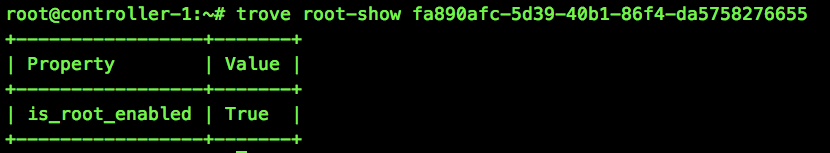</a></div>
</li>
<li><p><strong>启用默认root用户</strong><br>除了在已经存在的数据库实例上启用root用户，也可以在默认情况下启用root用户（在实例创建时）。需要将trove.conf配置文件的[mysql]配置中的root_on_create设为true。</p>
<figure class="highlight bash"><table><tr><td class="gutter"><pre><span class="line">1</span><br><span class="line">2</span><br></pre></td><td class="code"><pre><span class="line">[mysql]</span><br><span class="line">root_on_create = True</span><br></pre></td></tr></table></figure>

 <div class="alert warning"><p>需要重启Trove服务生效。</p>
</div>

</li>
</ol>
<h3 id="数据库操作"><a href="#数据库操作" class="headerlink" title="数据库操作"></a>数据库操作</h3><ol>
<li><p><strong>列出数据库</strong></p>
<figure class="highlight bash"><table><tr><td class="gutter"><pre><span class="line">1</span><br></pre></td><td class="code"><pre><span class="line">trove database-list &lt;实例id&gt;</span><br></pre></td></tr></table></figure>
<div class="figure " style="width:;"><a class="fancybox" href="images/trove-database-list.png" title="" data-caption="" data-fancybox="default">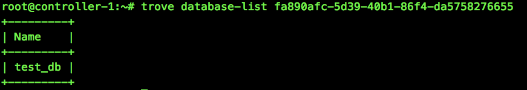</a></div>
</li>
<li><p><strong>禁止某些数据库的显示</strong><br>经常会有一些内置的数据库不需要通过database-list命令显示出来。可以通过设置trove.conf中的ignore_dbs参数禁止这些数据库的显示。</p>
<div class="alert info"><p>ignore_dbs的默认值是lost+found、mysql和information_schema。</p>
</div>
</li>
<li><p><strong>在运行的实例上创建数据库</strong></p>
<figure class="highlight bash"><table><tr><td class="gutter"><pre><span class="line">1</span><br></pre></td><td class="code"><pre><span class="line">trove database-create &lt;实例id&gt; &lt;name&gt;</span><br></pre></td></tr></table></figure>
</li>
<li><p><strong>创建实例时创建数据库</strong><br>trove create命令允许在创建实例的同时创建多个数据库。可以指定任意数量的数据库并与用户关联。</p>
<figure class="highlight bash"><table><tr><td class="gutter"><pre><span class="line">1</span><br></pre></td><td class="code"><pre><span class="line">trove create &lt;name&gt; &lt;flavor_id&gt; --size &lt;size&gt; --datastore &lt;datastore&gt; --databases &lt;database1 database2 ...&gt; --users &lt;user1:password1 user2:password2 ...&gt;</span><br></pre></td></tr></table></figure>

</li>
</ol>
<h3 id="用户操作"><a href="#用户操作" class="headerlink" title="用户操作"></a>用户操作</h3><ol>
<li><p><strong>在创建实例时创建用户</strong></p>
<figure class="highlight bash"><table><tr><td class="gutter"><pre><span class="line">1</span><br></pre></td><td class="code"><pre><span class="line">trove create &lt;name&gt; &lt;flavor_id&gt; --size &lt;size&gt; --datastore &lt;datastore&gt; --databases &lt;database1 database2 ...&gt; --users &lt;user1:password1 user2:password2 ...&gt;</span><br></pre></td></tr></table></figure>
</li>
<li><p><strong>列出用户</strong></p>
<figure class="highlight bash"><table><tr><td class="gutter"><pre><span class="line">1</span><br></pre></td><td class="code"><pre><span class="line">trove user-list &lt;实例id&gt;</span><br></pre></td></tr></table></figure>
<div class="figure " style="width:;"><a class="fancybox" href="images/trove-user-list.png" title="" data-caption="" data-fancybox="default">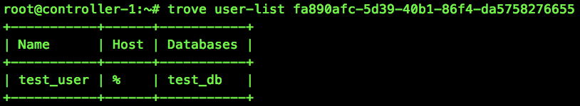</a></div>
</li>
<li><p><strong>在运行的实例上创建用户</strong></p>
<figure class="highlight bash"><table><tr><td class="gutter"><pre><span class="line">1</span><br></pre></td><td class="code"><pre><span class="line">trove user-create &lt;实例id&gt; &lt;username&gt; --databases &lt;database _name&gt;</span><br></pre></td></tr></table></figure>
</li>
<li><p><strong>删除用户</strong><br>删除实例的所有用户</p>
<figure class="highlight bash"><table><tr><td class="gutter"><pre><span class="line">1</span><br></pre></td><td class="code"><pre><span class="line">trove user-delete &lt;实例id&gt;</span><br></pre></td></tr></table></figure>
<p> 删除实例的指定用户</p>
 <figure class="highlight bash"><table><tr><td class="gutter"><pre><span class="line">1</span><br></pre></td><td class="code"><pre><span class="line">trove user-delete &lt;实例id&gt; &lt;username&gt;</span><br></pre></td></tr></table></figure>
</li>
<li><p><strong>管理用户的访问权限</strong></p>
<ol>
<li><p>列出用户的访问权限<br>user-show-access 命令显示了允许用户访问的数据库。</p>
<figure class="highlight bash"><table><tr><td class="gutter"><pre><span class="line">1</span><br></pre></td><td class="code"><pre><span class="line">trove user-show-access &lt;实例id&gt; &lt;username&gt;</span><br></pre></td></tr></table></figure>
<div class="figure " style="width:;"><a class="fancybox" href="images/trove-show-user-access.png" title="" data-caption="" data-fancybox="default">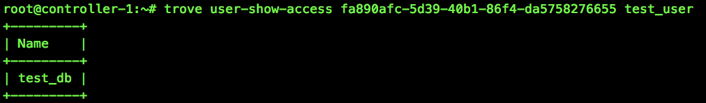</a></div>
</li>
<li><p>在user-list中禁止某些用户<br>一些数据库中有些内置用户不能向用户展示，可以在trove.conf配置文件中使用ignore_users参数禁止用户在user-list命令中显示</p>
<figure class="highlight shell"><table><tr><td class="gutter"><pre><span class="line">1</span><br><span class="line">2</span><br><span class="line">3</span><br></pre></td><td class="code"><pre><span class="line">[DEFAULT]</span><br><span class="line">ignore_users = os_admin,root</span><br><span class="line">...</span><br></pre></td></tr></table></figure>
<div class="alert info"><p>Mysql使用[DEFAULT]配置段</p>
</div>
</li>
<li><p>给予用户访问权限</p>
<figure class="highlight bash"><table><tr><td class="gutter"><pre><span class="line">1</span><br></pre></td><td class="code"><pre><span class="line">trove user-grant-access &lt;实例id&gt; &lt;username&gt;</span><br></pre></td></tr></table></figure>
</li>
<li><p>撤销用户访问权限</p>
<figure class="highlight bash"><table><tr><td class="gutter"><pre><span class="line">1</span><br></pre></td><td class="code"><pre><span class="line">trove user-revoke-access &lt;实例id&gt; &lt;username&gt;</span><br></pre></td></tr></table></figure>

</li>
</ol>
</li>
</ol>
<h2 id="其他"><a href="#其他" class="headerlink" title="其他"></a>其他</h2><h3 id="查看实例详细信息"><a href="#查看实例详细信息" class="headerlink" title="查看实例详细信息"></a>查看实例详细信息</h3><figure class="highlight bash"><table><tr><td class="gutter"><pre><span class="line">1</span><br></pre></td><td class="code"><pre><span class="line">trove show &lt;实例id或name&gt;</span><br></pre></td></tr></table></figure>
<div class="figure " style="width:;"><a class="fancybox" href="images/trove-show.png" title="" data-caption="" data-fancybox="default">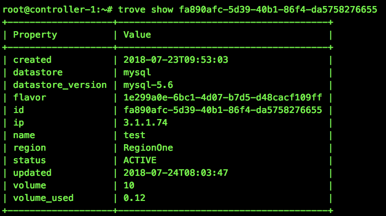</a></div>

<h3 id="查看flavor"><a href="#查看flavor" class="headerlink" title="查看flavor"></a>查看flavor</h3><figure class="highlight bash"><table><tr><td class="gutter"><pre><span class="line">1</span><br></pre></td><td class="code"><pre><span class="line">trove flavor-list</span><br></pre></td></tr></table></figure>
<div class="figure " style="width:;"><a class="fancybox" href="images/trove-flavor-list.png" title="" data-caption="" data-fancybox="default">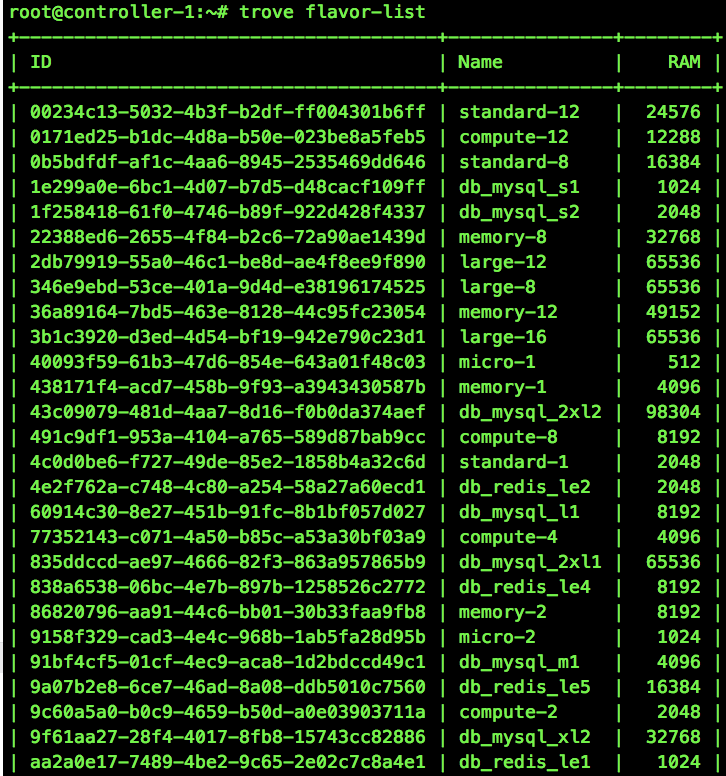</a></div>

<h3 id="查看flavor详细"><a href="#查看flavor详细" class="headerlink" title="查看flavor详细"></a>查看flavor详细</h3><figure class="highlight bash"><table><tr><td class="gutter"><pre><span class="line">1</span><br></pre></td><td class="code"><pre><span class="line">trove flavor-show &lt;实例id&gt;</span><br></pre></td></tr></table></figure>
<div class="figure " style="width:;"><a class="fancybox" href="images/trove-flavor-show.png" title="" data-caption="" data-fancybox="default">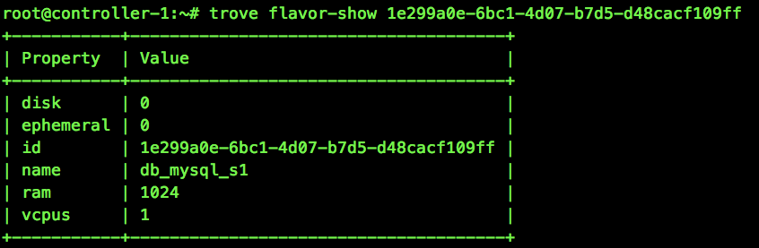</a></div>

<h3 id="查看datastore"><a href="#查看datastore" class="headerlink" title="查看datastore"></a>查看datastore</h3><figure class="highlight bash"><table><tr><td class="gutter"><pre><span class="line">1</span><br></pre></td><td class="code"><pre><span class="line">trove datastore-list</span><br></pre></td></tr></table></figure>
<div class="figure " style="width:;"><a class="fancybox" href="images/trove-datastore-list.png" title="" data-caption="" data-fancybox="default">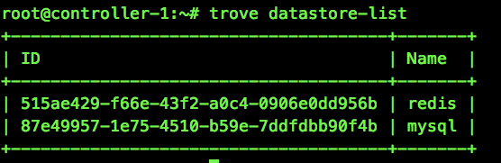</a></div>
<h3 id="查看datastore详细"><a href="#查看datastore详细" class="headerlink" title="查看datastore详细"></a>查看datastore详细</h3><figure class="highlight bash"><table><tr><td class="gutter"><pre><span class="line">1</span><br></pre></td><td class="code"><pre><span class="line">trove datastore-show &lt;datastore_id&gt;</span><br></pre></td></tr></table></figure>
<div class="figure " style="width:;"><a class="fancybox" href="images/trove-datastore-show.png" title="" data-caption="" data-fancybox="default">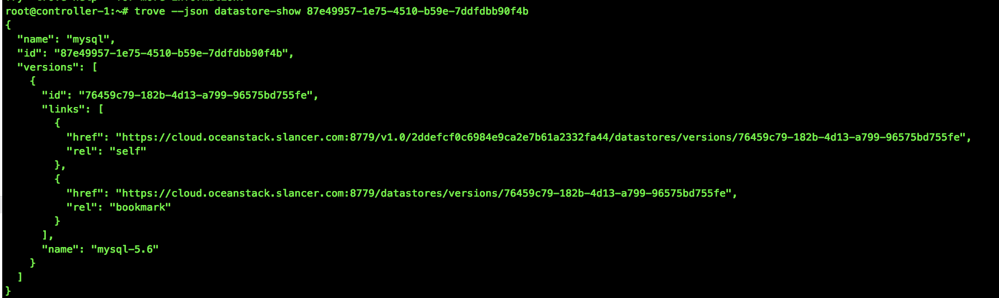</a></div>

<h3 id="查看datastore版本"><a href="#查看datastore版本" class="headerlink" title="查看datastore版本"></a>查看datastore版本</h3><figure class="highlight bash"><table><tr><td class="gutter"><pre><span class="line">1</span><br></pre></td><td class="code"><pre><span class="line">trove datastore-version-list &lt;datastore_id&gt;</span><br></pre></td></tr></table></figure>
<div class="figure " style="width:;"><a class="fancybox" href="images/trove-datastore-version-list.png" title="" data-caption="" data-fancybox="default">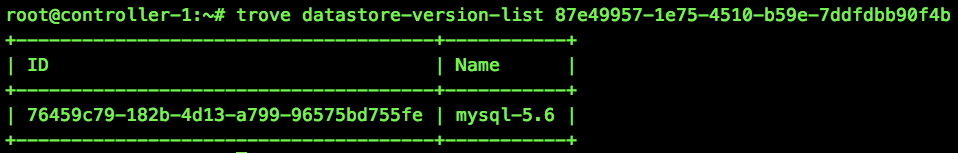</a></div>

<h3 id="帮助"><a href="#帮助" class="headerlink" title="帮助"></a>帮助</h3><figure class="highlight bash"><table><tr><td class="gutter"><pre><span class="line">1</span><br></pre></td><td class="code"><pre><span class="line">trove <span class="built_in">help</span> &lt;命令&gt;</span><br></pre></td></tr></table></figure>
<div class="figure " style="width:;"><a class="fancybox" href="images/trove-help.png" title="" data-caption="" data-fancybox="default">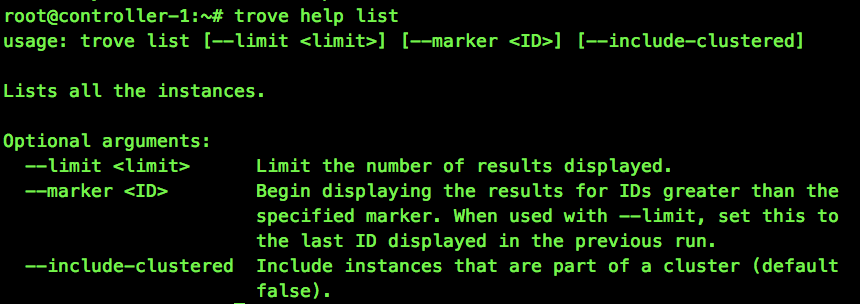</a></div>

<h1 id="高级操作"><a href="#高级操作" class="headerlink" title="高级操作"></a>高级操作</h1><h2 id="自定义flavor"><a href="#自定义flavor" class="headerlink" title="自定义flavor"></a>自定义flavor</h2><p>在启动一个Trove实例时，必须要指定一个flavor。flavor是虚拟机的模板，提供了基本的硬件配置信息，例如内存、磁盘空间、虚拟CPU的数量等等。</p>
<h3 id="查看可用flavor"><a href="#查看可用flavor" class="headerlink" title="查看可用flavor"></a>查看可用flavor</h3><figure class="highlight bash"><table><tr><td class="gutter"><pre><span class="line">1</span><br></pre></td><td class="code"><pre><span class="line">trove flavor-list</span><br></pre></td></tr></table></figure>
<div class="figure " style="width:;"><a class="fancybox" href="images/trove-flavor-list.png" title="" data-caption="" data-fancybox="default"></a></div>

<h3 id="查看nova的flavor"><a href="#查看nova的flavor" class="headerlink" title="查看nova的flavor"></a>查看nova的flavor</h3><figure class="highlight bash"><table><tr><td class="gutter"><pre><span class="line">1</span><br></pre></td><td class="code"><pre><span class="line">nova flavor-list</span><br></pre></td></tr></table></figure>
<p>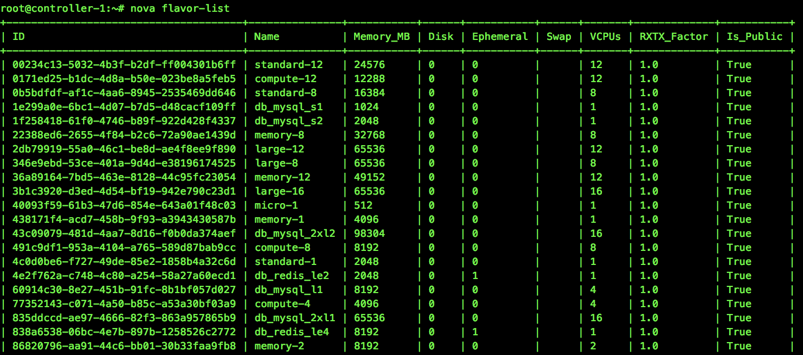</p>
<h3 id="创建flavor"><a href="#创建flavor" class="headerlink" title="创建flavor"></a>创建flavor</h3><figure class="highlight bash"><table><tr><td class="gutter"><pre><span class="line">1</span><br></pre></td><td class="code"><pre><span class="line">nova flavor-create &lt;name&gt; &lt;id&gt; &lt;ram&gt; &lt;disk&gt; &lt;vcpus&gt;</span><br></pre></td></tr></table></figure>

<h2 id="备份"><a href="#备份" class="headerlink" title="备份"></a>备份</h2><a id="more"></a>

<h3 id="新建备份"><a href="#新建备份" class="headerlink" title="新建备份"></a>新建备份</h3><figure class="highlight bash"><table><tr><td class="gutter"><pre><span class="line">1</span><br></pre></td><td class="code"><pre><span class="line">trove backup-create &lt;实例id&gt; &lt;name&gt;</span><br></pre></td></tr></table></figure>
<div class="figure " style="width:;"><a class="fancybox" href="images/trove-backup-create.png" title="" data-caption="" data-fancybox="default">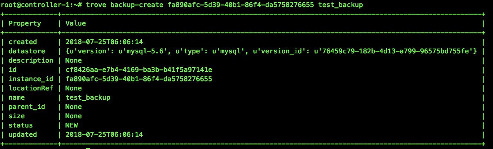</a></div>

<h3 id="新建增量备份"><a href="#新建增量备份" class="headerlink" title="新建增量备份"></a>新建增量备份</h3><p>Trove还支持基于现有备份创建增量备份。</p>
<figure class="highlight bash"><table><tr><td class="gutter"><pre><span class="line">1</span><br></pre></td><td class="code"><pre><span class="line">trove backup-create &lt;实例id&gt; &lt;name&gt; --parent &lt;已有备份id&gt; --description <span class="string">&quot;&lt;description&gt;&quot;</span></span><br></pre></td></tr></table></figure>

<h3 id="恢复备份"><a href="#恢复备份" class="headerlink" title="恢复备份"></a>恢复备份</h3><p>恢复备份的操作通过启动基于备份的新实例来完成。在Trove中，不能加载备份到现有实例中。</p>
<figure class="highlight bash"><table><tr><td class="gutter"><pre><span class="line">1</span><br></pre></td><td class="code"><pre><span class="line">trove create &lt;name&gt; &lt;flavor_id&gt; --size &lt;num&gt; --backup &lt;backup_id&gt;</span><br></pre></td></tr></table></figure>

<h3 id="删除备份"><a href="#删除备份" class="headerlink" title="删除备份"></a>删除备份</h3><figure class="highlight bash"><table><tr><td class="gutter"><pre><span class="line">1</span><br></pre></td><td class="code"><pre><span class="line">trove backup-delete &lt;备份的id/name&gt;</span><br></pre></td></tr></table></figure>

<h3 id="查看备份"><a href="#查看备份" class="headerlink" title="查看备份"></a>查看备份</h3><figure class="highlight bash"><table><tr><td class="gutter"><pre><span class="line">1</span><br></pre></td><td class="code"><pre><span class="line">trove backup-list</span><br></pre></td></tr></table></figure>
<div class="figure " style="width:;"><a class="fancybox" href="images/trove-backup-list.png" title="" data-caption="" data-fancybox="default">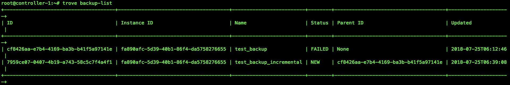</a></div>

<h3 id="找到指定实例的所有备份"><a href="#找到指定实例的所有备份" class="headerlink" title="找到指定实例的所有备份"></a>找到指定实例的所有备份</h3><figure class="highlight bash"><table><tr><td class="gutter"><pre><span class="line">1</span><br></pre></td><td class="code"><pre><span class="line">trove backup-list-instance &lt;实例id&gt;</span><br></pre></td></tr></table></figure>

<h2 id="主从"><a href="#主从" class="headerlink" title="主从"></a>主从</h2><h3 id="创建从节点"><a href="#创建从节点" class="headerlink" title="创建从节点"></a>创建从节点</h3><p>查看主节点信息。</p>
<figure class="highlight bash"><table><tr><td class="gutter"><pre><span class="line">1</span><br></pre></td><td class="code"><pre><span class="line">trove show &lt;实例id&gt;</span><br></pre></td></tr></table></figure>
<p>创建副本。</p>
<figure class="highlight bash"><table><tr><td class="gutter"><pre><span class="line">1</span><br></pre></td><td class="code"><pre><span class="line">trove create &lt;name&gt; &lt;flavor_id&gt; --size &lt;num&gt; --replica_of &lt;实例id&gt; --replica_count &lt;count&gt;</span><br></pre></td></tr></table></figure>
<div class="figure " style="width:;"><a class="fancybox" href="images/trove-create-replica.png" title="" data-caption="" data-fancybox="default">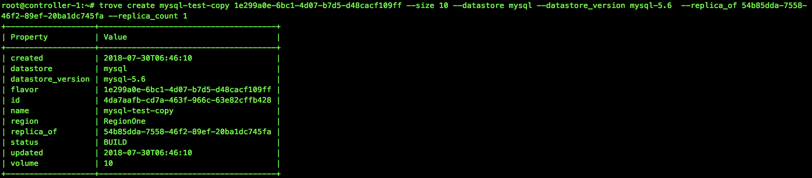</a></div>

<div class="alert info no-icon"><p>replica_count允许同时创建多个副本。默认值是1。</p>
</div>
<h3 id="故障切换"><a href="#故障切换" class="headerlink" title="故障切换"></a>故障切换</h3><p>在复制环境中，有一个主节点和一个或多个副本。可能用户会从目前可用的副本中选出新的主节点。这个过程称为故障切换。</p>
<h4 id="有序故障切换"><a href="#有序故障切换" class="headerlink" title="有序故障切换"></a>有序故障切换</h4><p>使用promote-to-replica-source命令替换当前的主节点。</p>
<figure class="highlight bash"><table><tr><td class="gutter"><pre><span class="line">1</span><br></pre></td><td class="code"><pre><span class="line">trove promote-to-replica-source &lt;副本实例id/name&gt;</span><br></pre></td></tr></table></figure>
<p>打破主节点和副本之间的复制的另一种方法是将副本从主节点上分离出来，这是一种不可逆的操作，通常用于在一个时间点生成一个数据集的备份，并可以随后用于生成该时间点的新实例。</p>
<figure class="highlight bash"><table><tr><td class="gutter"><pre><span class="line">1</span><br></pre></td><td class="code"><pre><span class="line">trove detach-replica &lt;副本实例id/name&gt;</span><br></pre></td></tr></table></figure>

<h4 id="主节点失败的故障切换"><a href="#主节点失败的故障切换" class="headerlink" title="主节点失败的故障切换"></a>主节点失败的故障切换</h4><p>使用eject-replica-source命令来处理主节点失败的情况。当对一个失败的主节点执行该命令时，会将该主节点抛弃并选举出新的主节点。<br>该命令有些保护措施。当针对一个不是主节点的实例执行时，该命令会出错。此外针对一个运行正常的主节点执行时，命令也会失败。</p>
<figure class="highlight bash"><table><tr><td class="gutter"><pre><span class="line">1</span><br></pre></td><td class="code"><pre><span class="line">trove eject-replica-source &lt;失败主节点实例id/name&gt;</span><br></pre></td></tr></table></figure>
            


        </div>
    </div>
    <div id="post-footer" class="post-footer main-content-wrap">
        
            <div class="post-footer-tags">
                <span class="text-color-light text-small">TAGGED IN</span><br/>
                
    <a class="tag tag--primary tag--small t-none-link" href="/tags/Trove/" rel="tag">Trove</a>

            </div>
        
        
            <div class="post-actions-wrap">
    <nav>
        <ul class="post-actions post-action-nav">
            <li class="post-action">
                
                    
                <a
                    class="post-action-btn btn btn--default tooltip--top"
                    href="/2018/09/11/Trove%E7%9A%84%E6%A6%82%E5%BF%B5%E5%92%8C%E6%9E%B6%E6%9E%84/"
                    data-tooltip="Trove的概念和架构"
                    aria-label="PREVIOUS: Trove的概念和架构"
                >
                    
                        <i class="fa fa-angle-left" aria-hidden="true"></i>
                        <span class="hide-xs hide-sm text-small icon-ml">PREVIOUS</span>
                    </a>
            </li>
            <li class="post-action">
                
                    
                <a
                    class="post-action-btn btn btn--default tooltip--top"
                    href="/2018/07/26/Mysql%E5%9F%BA%E7%A1%80%E7%AF%87%E4%B9%8BSQL%E5%9F%BA%E7%A1%80/"
                    data-tooltip="Mysql基础篇之SQL基础"
                    aria-label="NEXT: Mysql基础篇之SQL基础"
                >
                    
                        <span class="hide-xs hide-sm text-small icon-mr">NEXT</span>
                        <i class="fa fa-angle-right" aria-hidden="true"></i>
                    </a>
            </li>
        </ul>
    </nav>
    <ul class="post-actions post-action-share">
        <li class="post-action hide-lg hide-md hide-sm">
            <a
                class="post-action-btn btn btn--default btn-open-shareoptions"
                href="#btn-open-shareoptions"
                aria-label="Share this post"
            >
                <i class="fa fa-share-alt" aria-hidden="true"></i>
            </a>
        </li>
        
            
            
            <li class="post-action hide-xs">
                <a
                    class="post-action-btn btn btn--default"
                    target="new" href="http://service.weibo.com/share/share.php?&amp;title=https://wangkuntian.github.io/2018/09/04/Trove%E7%9A%84%E6%93%8D%E4%BD%9C/"
                    title="Share on Weibo"
                    aria-label="Share on Weibo"
                >
                    <i class="fab fa-weibo" aria-hidden="true"></i>
                </a>
            </li>
        
            
            
            <li class="post-action hide-xs">
                <a
                    class="post-action-btn btn btn--default"
                    target="new" href="http://connect.qq.com/widget/shareqq/index.html?url=https://wangkuntian.github.io/2018/09/04/Trove%E7%9A%84%E6%93%8D%E4%BD%9C/&amp;title=Trove的操作"
                    title="Share on QQ"
                    aria-label="Share on QQ"
                >
                    <i class="fab fa-qq" aria-hidden="true"></i>
                </a>
            </li>
        
            
            
            <li class="post-action hide-xs">
                <a
                    class="post-action-btn btn btn--default"
                    target="new" href="http://sns.qzone.qq.com/cgi-bin/qzshare/cgi_qzshare_onekey?url=https://wangkuntian.github.io/2018/09/04/Trove%E7%9A%84%E6%93%8D%E4%BD%9C/"
                    title="Share on Qzone"
                    aria-label="Share on Qzone"
                >
                    <i class="fa fa-star" aria-hidden="true"></i>
                </a>
            </li>
        
        
            
        
        <li class="post-action">
            
                <a class="post-action-btn btn btn--default" href="#table-of-contents" aria-label="目录">
            
                <i class="fa fa-list" aria-hidden="true"></i>
            </a>
        </li>
    </ul>
</div>


        
        
            
        
    </div>
</article>
<div class="main-content-wrap">
    
        <script src="//cdn1.lncld.net/static/js/3.0.4/av-min.js"></script>
<script src="//unpkg.com/valine/dist/Valine.min.js"></script>
<div id="vcomments"></div>
<!-- <div>
  <span
    id="/2018/09/04/Trove%E7%9A%84%E6%93%8D%E4%BD%9C/"
    class="leancloud_visitors"
    data-flag-title="Trove的操作"
  >
    <em class="post-meta-item-text">阅读量 </em>
    <i class="leancloud-visitors-count">loading</i>
  </span>
</div> -->
<script>
  new Valine({
    el: "#vcomments",
    appId: "TFzdPovYqKFk1B2hiJlkRHsx-gzGzoHsz",
    appKey: "56G0KI3088RN76r5dTyRcsao",
    placeholder: "ヾﾉ≧∀≦)o来啊，快活啊!",
    notify: "false",
    verity: "",
    path: window.location.pathname,
    avatar: "wavatar",
    meta: ["nick", "mail", "link"],
    pageSize: "10",
    lang: "zh-cn",
    visitor: "true",
    highlight: "true",
  });
</script>

    
</div>


                <footer id="footer" class="main-content-wrap">
    <span class="copyrights">
        Copyrights &copy; 2021 Wang kuntian. All Rights Reserved.
    </span>
</footer>

            </div>
            
                <div id="bottom-bar" class="post-bottom-bar" data-behavior="4">
                    <div class="post-actions-wrap">
    <nav>
        <ul class="post-actions post-action-nav">
            <li class="post-action">
                
                    
                <a
                    class="post-action-btn btn btn--default tooltip--top"
                    href="/2018/09/11/Trove%E7%9A%84%E6%A6%82%E5%BF%B5%E5%92%8C%E6%9E%B6%E6%9E%84/"
                    data-tooltip="Trove的概念和架构"
                    aria-label="PREVIOUS: Trove的概念和架构"
                >
                    
                        <i class="fa fa-angle-left" aria-hidden="true"></i>
                        <span class="hide-xs hide-sm text-small icon-ml">PREVIOUS</span>
                    </a>
            </li>
            <li class="post-action">
                
                    
                <a
                    class="post-action-btn btn btn--default tooltip--top"
                    href="/2018/07/26/Mysql%E5%9F%BA%E7%A1%80%E7%AF%87%E4%B9%8BSQL%E5%9F%BA%E7%A1%80/"
                    data-tooltip="Mysql基础篇之SQL基础"
                    aria-label="NEXT: Mysql基础篇之SQL基础"
                >
                    
                        <span class="hide-xs hide-sm text-small icon-mr">NEXT</span>
                        <i class="fa fa-angle-right" aria-hidden="true"></i>
                    </a>
            </li>
        </ul>
    </nav>
    <ul class="post-actions post-action-share">
        <li class="post-action hide-lg hide-md hide-sm">
            <a
                class="post-action-btn btn btn--default btn-open-shareoptions"
                href="#btn-open-shareoptions"
                aria-label="Share this post"
            >
                <i class="fa fa-share-alt" aria-hidden="true"></i>
            </a>
        </li>
        
            
            
            <li class="post-action hide-xs">
                <a
                    class="post-action-btn btn btn--default"
                    target="new" href="http://service.weibo.com/share/share.php?&amp;title=https://wangkuntian.github.io/2018/09/04/Trove%E7%9A%84%E6%93%8D%E4%BD%9C/"
                    title="Share on Weibo"
                    aria-label="Share on Weibo"
                >
                    <i class="fab fa-weibo" aria-hidden="true"></i>
                </a>
            </li>
        
            
            
            <li class="post-action hide-xs">
                <a
                    class="post-action-btn btn btn--default"
                    target="new" href="http://connect.qq.com/widget/shareqq/index.html?url=https://wangkuntian.github.io/2018/09/04/Trove%E7%9A%84%E6%93%8D%E4%BD%9C/&amp;title=Trove的操作"
                    title="Share on QQ"
                    aria-label="Share on QQ"
                >
                    <i class="fab fa-qq" aria-hidden="true"></i>
                </a>
            </li>
        
            
            
            <li class="post-action hide-xs">
                <a
                    class="post-action-btn btn btn--default"
                    target="new" href="http://sns.qzone.qq.com/cgi-bin/qzshare/cgi_qzshare_onekey?url=https://wangkuntian.github.io/2018/09/04/Trove%E7%9A%84%E6%93%8D%E4%BD%9C/"
                    title="Share on Qzone"
                    aria-label="Share on Qzone"
                >
                    <i class="fa fa-star" aria-hidden="true"></i>
                </a>
            </li>
        
        
            
        
        <li class="post-action">
            
                <a class="post-action-btn btn btn--default" href="#table-of-contents" aria-label="目录">
            
                <i class="fa fa-list" aria-hidden="true"></i>
            </a>
        </li>
    </ul>
</div>


                </div>
                
    <div id="share-options-bar" class="share-options-bar" data-behavior="4">
        <i id="btn-close-shareoptions" class="fa fa-times"></i>
        <ul class="share-options">
            
                
                
                <li class="share-option">
                    <a
                        class="share-option-btn"
                        target="new"
                        href="http://service.weibo.com/share/share.php?&amp;title=https://wangkuntian.github.io/2018/09/04/Trove%E7%9A%84%E6%93%8D%E4%BD%9C/"
                        aria-label="Share on Weibo"
                    >
                        <i class="fab fa-weibo" aria-hidden="true"></i><span>Share on Weibo</span>
                    </a>
                </li>
            
                
                
                <li class="share-option">
                    <a
                        class="share-option-btn"
                        target="new"
                        href="http://connect.qq.com/widget/shareqq/index.html?url=https://wangkuntian.github.io/2018/09/04/Trove%E7%9A%84%E6%93%8D%E4%BD%9C/&amp;title=Trove的操作"
                        aria-label="Share on QQ"
                    >
                        <i class="fab fa-qq" aria-hidden="true"></i><span>Share on QQ</span>
                    </a>
                </li>
            
                
                
                <li class="share-option">
                    <a
                        class="share-option-btn"
                        target="new"
                        href="http://sns.qzone.qq.com/cgi-bin/qzshare/cgi_qzshare_onekey?url=https://wangkuntian.github.io/2018/09/04/Trove%E7%9A%84%E6%93%8D%E4%BD%9C/"
                        aria-label="Share on Qzone"
                    >
                        <i class="fa fa-star" aria-hidden="true"></i><span>Share on Qzone</span>
                    </a>
                </li>
            
        </ul>
    </div>


            
        </div>
        


    
        
    

<div id="about">
    <div id="about-card">
        <div id="about-btn-close">
            <i class="fa fa-times"></i>
        </div>
        
            
        
            <h4 id="about-card-name">Wang kuntian</h4>
        
            <div id="about-card-bio"><p>Love Python Love LOL</p>
</div>
        
        
            <div id="about-card-job">
                <i class="fa fa-briefcase"></i>
                <br/>
                <p>Software Engineer</p>

            </div>
        
        
            <div id="about-card-location">
                <i class="fa fa-map-marker-alt"></i>
                <br/>
                Beijing
            </div>
        
    </div>
</div>

        
        
<div id="cover" style="background-image:url('/assets/images/cover-v1.2.0.jpg');"></div>
        <!--SCRIPTS-->

<script src="/assets/js/script-jxyk1shzzjuxigu5fogp601dtvpo6yq0npnml7mbhrxndjvco3cxn9yioi82.min.js"></script>

<!--SCRIPTS END-->


    


    <script src="/live2dw/lib/L2Dwidget.min.js?094cbace49a39548bed64abff5988b05"></script><script>L2Dwidget.init({"display":{"superSample":2.5,"width":180,"height":400,"position":"right","hOffset":0,"vOffset":40},"mobile":{"show":true,"scale":0.66},"react":{"opacityDefault":0.7,"opacityOnHover":0.2},"dialog":{"enable":true,"hitokoto":false},"pluginRootPath":"live2dw/","pluginJsPath":"lib/","pluginModelPath":"assets/","tagMode":false,"debug":false,"model":{"scale":1,"hHeadPos":0.5,"vHeadPos":0.618,"jsonPath":"/live2dw/assets/hibiki.model.json"},"log":false});</script></body>
</html>
